タイタンXムジカーレ
作品紹介
授業の一環として、3名のチームで開発を行ったリズムゲームです。
チーム内での僕の主な役割としては、企画、設計、コーディング(Unity依存のフロントエンドの挙動、UIのアーキテクチャ設計と実装)、全体の役割分担や進捗管理を行いました。
チーム内で情報共有を行い、Gitを使用して作業の分担を行うなどチーム開発が円滑に進められるように努力しました。
企画書
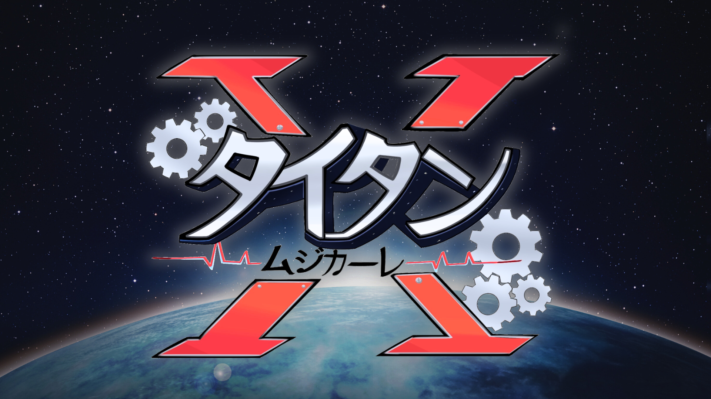
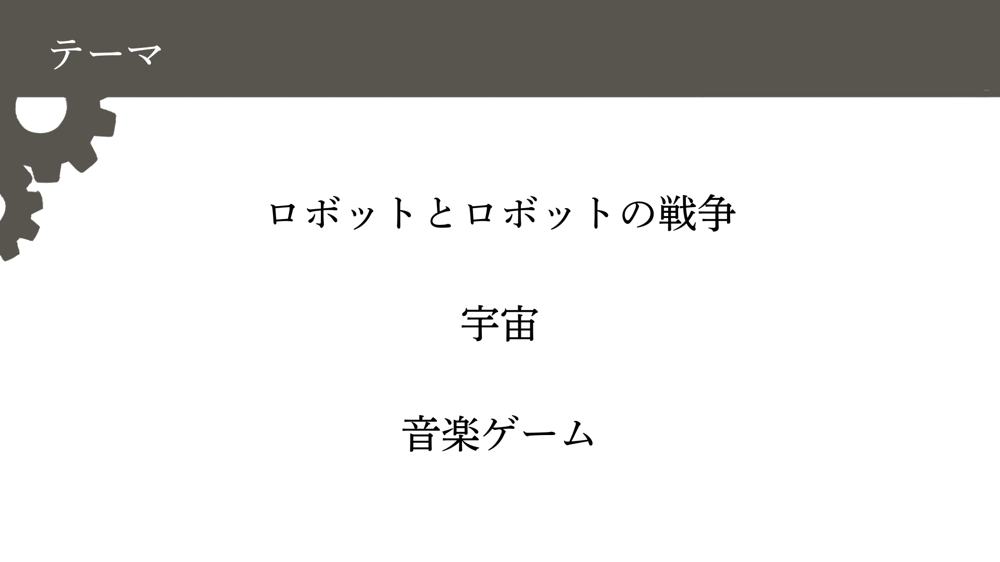
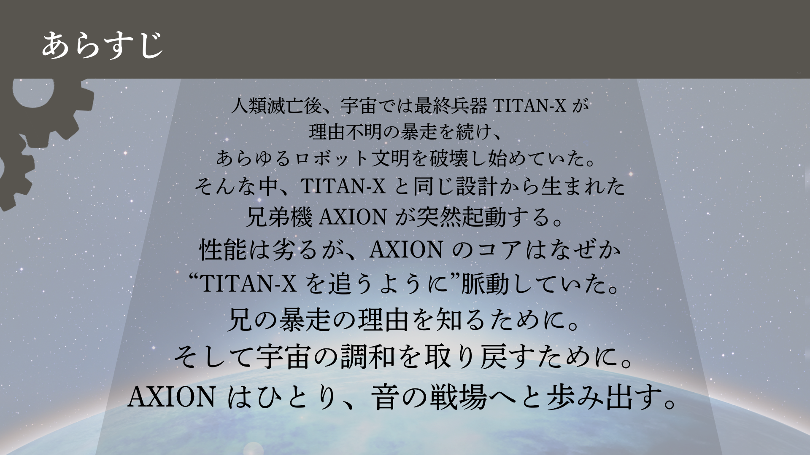
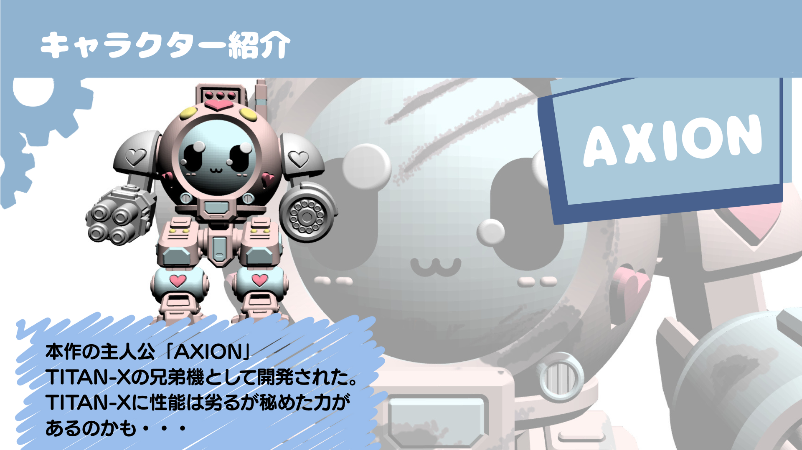
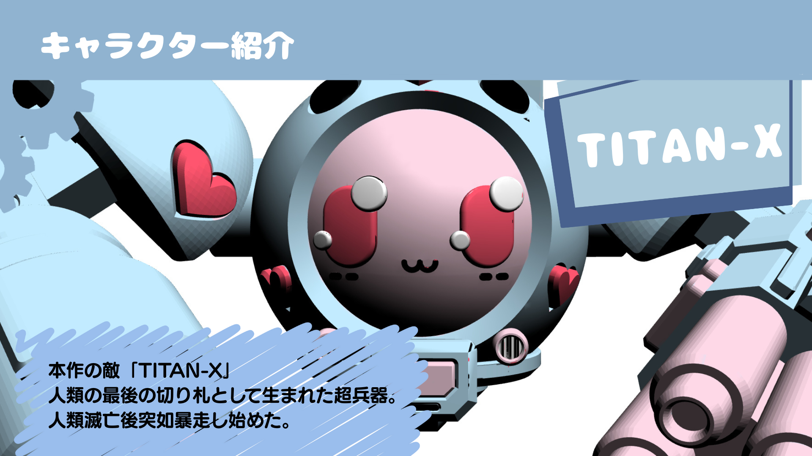
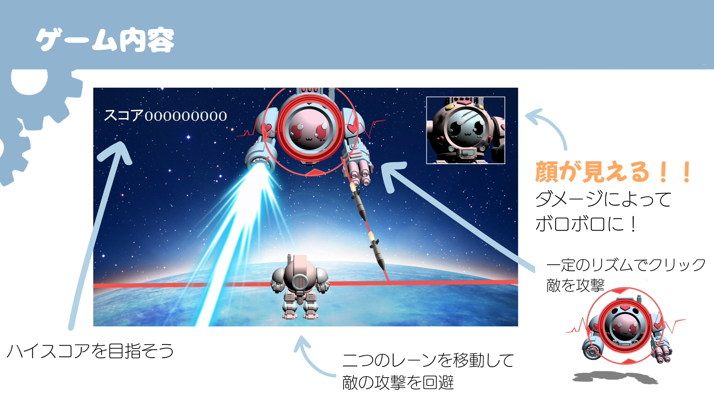
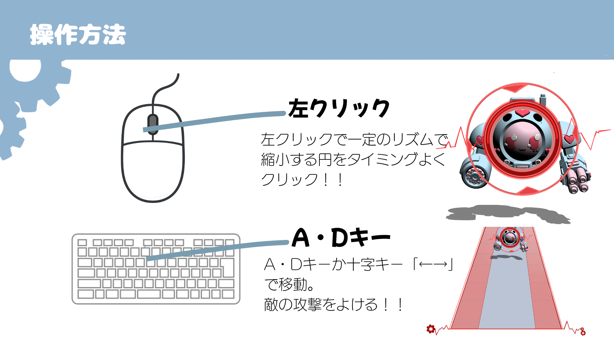
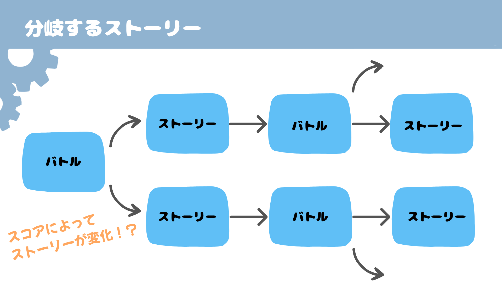
設計図
画面構成
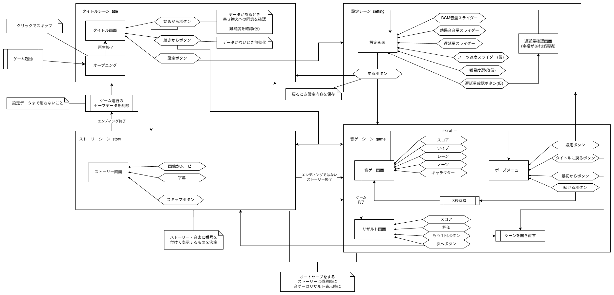
UMLクラス図
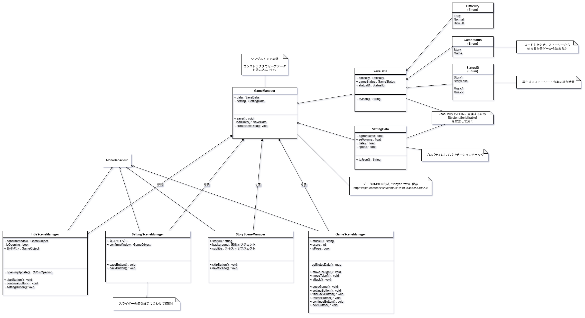
小さいプロジェクトなので細かな分解はしすぎず、データや進行管理を行うインフラ部分と、各シーンの挙動を実現するフロント部分の2つに分けて設計を行いました。
これにより、シーンごとに独立して開発が可能になり、チームメンバーの役割分担も容易になりました。
努力したところ
チーム開発としてリリース作品を制作するのはこのゲームが初めてでした。この制作ではリーダーとしてチームをまとめることを第一に考えて開発を行いました。
仕様や必要な素材などについては口頭での説明だけでなくドキュメントにも整理し、チーム内で共有するようにしました。
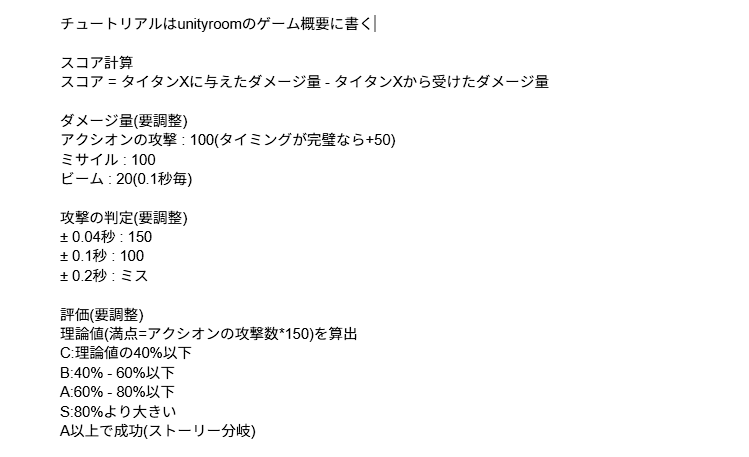
期限に間に合うよう適切なスケジュールを考え、手順の説明やレビュー、アドバイスをするなど、チームメンバーの補助に努めました。
また、自分でも手を動かして開発を行い、設計・ドキュメントの見直しや修正も行いました。
譜面作成ツールのデータを本作品用のデータに変換する効率化ツールも開発しました。
作品リンク
UnityroomGitHubソース